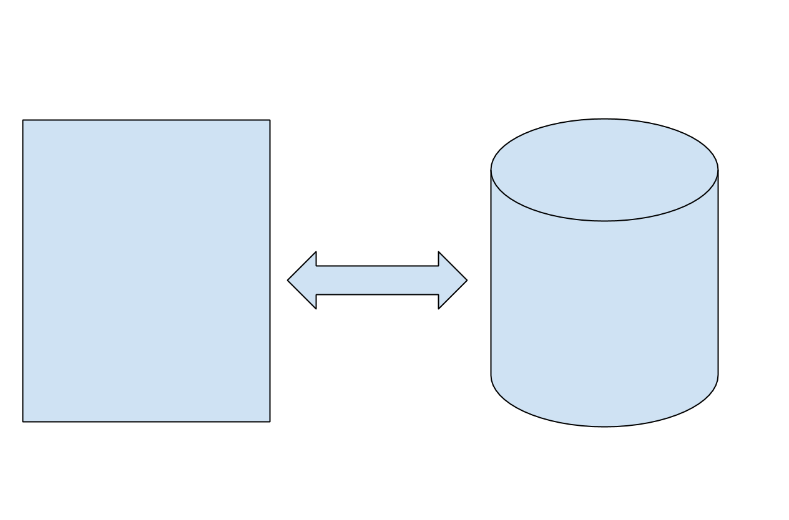
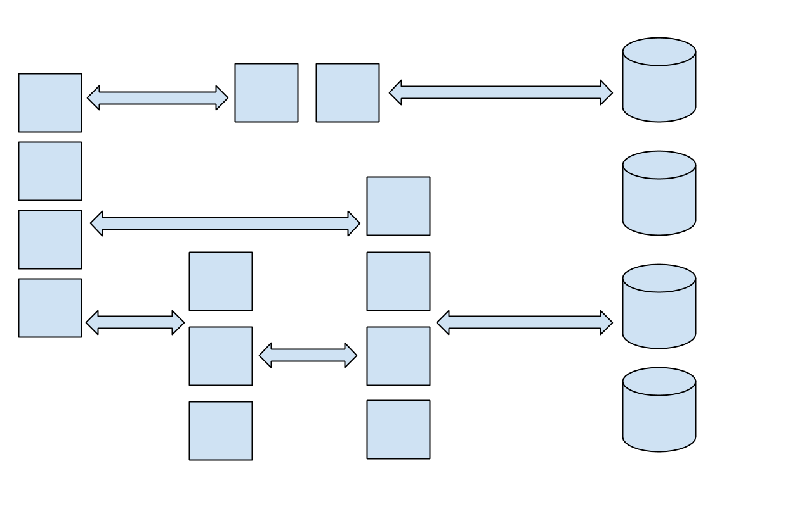
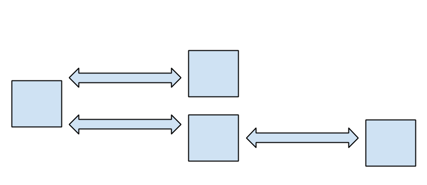

Making sense of big applications
with AppDynamics
Matt Cannizzaro '08, Adam Cath '07
AppDynamics
Started in 2008
Downtown SF
300 employees
What we do
Let's build a web app

Say you're building a web app. It might start small, but
hopefully it will need to grow. You can get bigger and bigger
boxes, until you hit the limit of what a single machine can
handle. Then what? There's really only one choice: you
need to distribute your application across multiple nodes.
Easier said than done

Writing a distributed application is not an easy task; there's
a completely new set of engineering problems that you'll
need to tackle. Let's talk about one of these many problems:
performance.
Why performance matters
There's a certain satisfaction in writing efficient, fast code.
But fundamentally, why do you need to care about performance?
Making good use of the infrastructure and resources that you
have is important, but it's not (usually)
the most important thing.
Your app exists to solve your users' problems, but users are
impatient: if your app is slow, users will abandon it. This
problem is particularly bad if users have many alternatives
and the cost of switching is low. Think about booking a flight
on a travel site. If one site is slow, it's really easy to
try one of its competitors instead. If your app is a business,
bad performance costs money.
How you can measure performance?
Once you realize that you care about performance, you'll want
to understand how your app performs by measuring it. How
might you go about doing that? It would be reasonable to
start by collecting some data from each node your app is
running on, like CPU and memory utilization, how often
garbage collections are running, and things like that. This
is better than nothing, but not by much. Users don't care
about any of these things: they care about their experiences.
It's almost certainly bad if 5% of your users have a poor
experience with your app. Imagine if Google dropped one out of
every twenty searches that you ran! But could you detect
such a problem by looking at, say, CPU utilization? You'll
need a deeper understanding before you can find and fix many
types of problems.
Your app is not static
Traditionally, applications were deployed only a few times a
year, and each deployment was a major event. The rise of the
web and distributed applications has made it much easier to
deploy more often, so it's not uncommon for developers to
deploy new versions of their web apps multiple times in a
single week. This is great news for users, who benefit from
new features and bug fixes, but it introduces new problems
for performance monitoring. Since your app is constantly
changing, your performance monitor needs to be able to
quickly adapt to the new environment. A tool that requires
lengthy or complex configuration slows you down and is not
suitable for modern web application development.
Requirements
Distributed
Tells the story as your users experience it
Require minimal manual configuration
To recap, we need our performance monitor to be:
Telling the story of a request
We suspect that infrastructure monitoring is not enough, so
how will we measure performance? Your users interact with
your app over HTTP, so that's a logical place to start. If
we know when a request arrives at your server, and when your
server finishes sending the response, that's a decent
measure your app's performance from the user's perspective.
What we've got to work with
GET /dumprequest HTTP/1.1
Host: djce.org.uk
Connection: keep-alive
Accept: text/html,application/xhtml+xml,application/xml;q=0.9,*/*;q=0.8
User-Agent: Mozilla/5.0 (Macintosh; Intel Mac OS X 10_8_5) AppleWebKit/537.36 (KHTML, like Gecko) Chrome/29.0.1547.76 Safari/537.36
Referer: https://www.google.com/
Accept-Language: en-US,en;q=0.8
Here's an example of an HTTP request. It has these interesting
components:
Tag and follow

When a request from a user first arrives, start by generating
a unique ID for it. At some point, the routine that is
processing the user's request may make some requests to other
nodes in your application. When this happens, add the unique
ID as a header in the request. Using this method, we can
discover every HTTP request and response that's involved in
servicing a user's request, and if the user's request is
slow, or encounters an error, we can determine where the
problem lies.
Implementation
public void send(Request req)
{
if (Profiler.isInTransaction()) {
// We are a middle node in a distributed transaction.
requestID = Profiler.getCurrentTransactionID()
} else {
// We are the root node of a distributed transaction.
requestID = Profiler.createTransactionID()
}
long startT = System.nanoTime()
req.addHeader("REQUEST_ID", requestID)
...
long endT = System.nanoTime()
Profiler.reportRequest(req, endT - startT, requestID)
}
Let's take a quick look at the implementation of the
algorithm we just described. Here's the code we'd need to
add to the routine that sends requests to tag outgoing
requests.
Implementation
public void receive(Request req, Response res)
{
if (req.hasHeader("REQUEST_ID"))
Profiler.setCurrentTransaction(req.getHeader("REQUEST_ID"))
...
}
And here's the code we'd need to add to the routine that
handles incoming requests.
How your code runs
For argument's sake, let's assume that your app is written
in Java. It starts out as source code, which the Java compiler
transforms into Java byte code during compilation. When it's
time to run your program, you can't just run the byte code
as is; your CPU doesn't understand byte code. So the Java
Virtual Machine does another transformation, this time turning
the byte code into native machine code. You'll recall that this
step is called just-in-time compilation, or JITing.
Instrumenting an app
public void sendHttpRequest(Request request) {
...
}
Let's say that the method that implements HTTP requests in
your app looks something like this. Since few apps
re-implement this functionality from scratch, this method
is probably part of a library. In order to instrument it,
we need to transform the body of the method from this, into...
Instrumenting an app
public void sendHttpRequest(Request request) {
Profiler.beginHttpRequest(request);
...
Profiler.endHttpRequest(request);
}
... this. We can use a technique called byte code injection
to perform this transformation at runtime. Here's how it works:
when the JVM is running a program and it needs to find the
definition of a class, it uses a special sort of object
called a class loader. The JVM provides an API to hook into
the class loading process so that your code is called after
a class loader has found the definition of a class, but
before that class's definition is available to the rest of
the program. We use this opportunity to examine
the class being loaded, and if it happens to be a class that
we are interested in instrumenting, we write new byte code
into the bodies of its methods.
Making sense of the data
In a production environment, there are many agents reporting
quite a large amount of data. This means that we need to have
a scalable way of collecting and aggregating all this data,
and also need to have effective visualizations to help
our users make sense of it. Let me show you our product and
demo some of the basic features.
Demo should cover:
Unsolicited advice
Or, some things that you probably don't think matter,
1) Do code reviews
This one seems small, but it's a really big deal.
2) Get real feedback
The first product I worked on at Adobe was really cool. We got lots of feedback from potential customers:
they thought it was really cool. I demoed it in this very room a few years ago, and your predecessors
thought it was cool too. We worked hard on it for 3 years. Then we found out there was no real market
for it because it didn't really fit into anyone's workflow.
3) Learn tech that transfers
Not proprietary stacks.
One of the reasons that both Matt and I left Adobe is that we had become experts on Flash, which is
a dead technology. When we applied to our next jobs, we basically had to apologize for that.
Don't waste brain cells on dead technology.
4) Stay close to the business
Sorry, this means money.
Full-stack visibility.
If you don't mind your project getting cancelled every few years, you can ignore this section.
5) Think about your second job
Right now, you're probably focused on getting your first job. To me, that first job, much like the
first day of college, felt like a sort of information event horizon: it was simply impossible to know
what would happen after the first job.